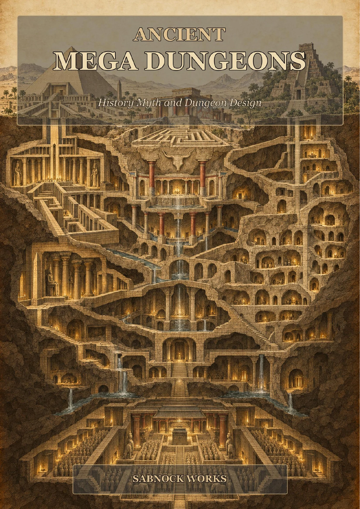

01

Essay collection
Mythic Spears
Six connected essays on the Vel of Murugan, Achilles' Pelian ash, Lugh's spear, Gungnir, and the way legendary artefacts continue to shape modern games.
From the workshop papers
Long-form essays on mythology, ancient mega-dungeons, history, exploration, game design, and the things that give a story weight. Every collection is available as a complete PDF edition, with selected work also available to read online.
The first shelf
Essay collection
Six connected essays on the Vel of Murugan, Achilles' Pelian ash, Lugh's spear, Gungnir, and the way legendary artefacts continue to shape modern games.

Essay collection
Five essays on the labyrinths, sacred complexes, underground cities, and sealed tombs of antiquity, moving from historical evidence and myth to lessons for modern dungeon design.
Historical foundations
Essays on the journeys, people, and historical record behind the expedition strategy game.
Routes of Africa companion essay
A long-form account of Barth's life, travels, collaborators, and legacy, and of the historical research that became the foundation for Routes of Africa.
More papers to come
This shelf will grow one collection at a time. Essays, article series, and source-led notes will remain separate from the short fiction archive.